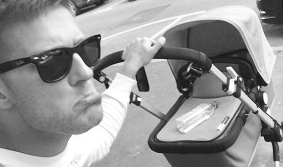
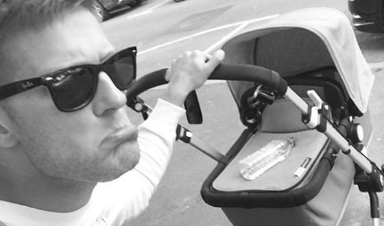

Павел Алексеевич Чинарев
Обо мне
- Имя при рождении: Павел Чинарев
- Дата рождения: 23 мая 1986 г.
- Место рождения: Ленинград (Сестрорецк), РСФСР, СССР
- Гражданство: Россия
- Профессия: Актер
- Годы активности: с 2005 г.
- IMDb: ID 7386379
Биография
Ранние годы
Павел Чинарёв родился 23 мая 1986 года в Ленинграде (Сестрорецк), в семье инженеров-электриков. У
Павла есть родная старшая сестра Екатерина (род. 1976).
С детства и до поступления в театральный ВУЗ Павел посещал детскую театральную студию в
Санкт-Петербурге,
куда привела его старшая сестра. Актёрское мастерство в студии ему преподавал Антон Владимирович
Духовской.
В шестнадцать лет поступил на факультет актёрского искусства и режиссуры Санкт-Петербургской
государственной
академии театрального искусства (СПбГАТИ) (мастерская профессора Льва Абрамовича Додина). Среднюю школу
окончил экстерном. После третьего курса, не понимая, что от него хочет мастер, взял академический отпуск
сроком на полгода и пошёл учиться на бармена. Продолжил учебу в академии уже в мастерской профессора
Юрия
Михайловича Красовского. Окончил СПбГАТИ по специальности «Актёрское искусство» в 2007 году.
Карьера
По окончании академии решил не показываться в театрах с целью трудоустройства, как это делали
большинство
выпускников. Первые полгода занимался творческой деятельностью в области открытия новых супермаркетов.
Затем
около года работал таксистом.
В 2008 году был принят в труппу Государственного драматического театра «Приют комедианта» в
Санкт-Петербурге.
Позже начал сотрудничать с петербургской независимой театральной группой «Театр post», созданной в 2011
году
режиссёром Дмитрием Волкостреловым.
В 2011 году исполнил главную роль в самом радикальном спектакле российского театра «Солдат»,
поставленном
по пьесе Павла Пряжко петербургским режиссёром Дмитрием Волкостреловым (совместная работа московского
«Театра.doc» и санкт-петербургского «Театра post»).
В 2013—2014 годах состоял в стажёрской группе Московского Художественного театра имени А. П. Чехова (был
занят в спектаклях «Конёк-горбунок» по сказке Ершова и «Пиквикский клуб» Диккенса), а в настоящее время
состоит в его труппе. Играет в спектаклях «Идеальный муж. Комедия» и «Карамазовы» режиссёра Константина
Богомолова.
Сотрудничает также с Государственным театром наций в Москве, где занят в спектаклях «Гаргантюа и
Пантагрюэль», «Идиот», «Три дня в аду» и «ГрозаГроза».
В 2015 году снялся в роли гопника-интеллектуала Петра в фильме Михаила Местецкого «Тряпичный союз». За
исполнение роли в этом фильме Павел Чинарёв вместе с актёрами Василием Буткевичем, Александром Палем и
Иваном Янковским был удостоен приза «За лучшую мужскую роль» мужскому актёрскому ансамблю на Открытом
российском кинофестивале «Кинотавр» в Сочи в 2015 году.
Личная жизнь
Павел Чинарёв женат на Алёне Александровне Бондарчук. У супругов есть сын (род. сентябрь 2016).
 

Фильмография
- 2000—2005 — ОБЖ — Пашка, ученик школы
- 2005 — Garpastum — эпизод
- 2007 — Преступление и наказание — эпизод
- 2007 — Опера. Хроники убойного отдела 3 (серия № 10 «Драгоценные письма») — Сергей Загорулько
- 2008 — Бумажный солдат — эпизод
- 2009 — Литейный 3 (серия № 25 «Золотая осень») — Юра
- 2009 — Одержимый — Джек (Женя) Рюмин, наркоман
- 2009 — Отставник — радист
- 2009 — Черчилль (фильм № 10 «Оптический обман») — Кирилл Каменев, сын Веры Андреевны и Олега Николаевича
- 2010 — Тульский Токарев — бармен
- 2010 — Черкизона. Одноразовые люди — Драгон
- 2010 — Морские дьяволы 4 (серия № 22 «Брешь в защите») — Игорь
- 2010 — Прощай, «Макаров»! (серия № 24 «Горнолыжный курорт») — Максим
- 2011 — Казак — Михаил, сын бизнесмена Евгения Зарецкого
- 2011 — Очкарик — Иван, сын криминального авторитета Максима Сибирцева («Сибиряка»)
- 2011 — Иван и Толян — Анатолий (Толян) Найдёнков, частный детектив
- 2012 — Крутой — Гера
- 2012 — Литейный 7 (серия № 13 «Синдикат») — Лёня
- 2012 — ППС 2 (серия № 7 «Самооборона») — Никита
- 2014 — Королева бандитов 2 — Гоша
- 2015 — Тряпичный союз — Пётр, гопник-интеллектуал
- 2016 — Клим — Всеволод Долгих, капитан полиции
- 2016 — Маршрут построен — Андрей, муж Ольги, отец Ксюши
- 2016 — Шакал — Илья Любовский, бандит
- 2016 — Стена — Григорий Колдырев, молодой служащий посольского приказа
- 2017 — Доктор Рихтер — Руслан Егоршин, врач-невролог
- 2017 — Налёт — Марик, ветеринар
- 2017 — Демон революции — матрос, освободивший Алексея Мезенцева из тюрьмы
- 2017 — Гурзуф — Аркадий Лаврик, возлюбленный Регины Морозовой
- 2018 — Мажор 3 — Иван Константинович Соловьёв, профессиональный автоугонщик, парень Анны Родионовой, друг Игоря Соколовского
- 2018 — Подбросы — прокурор
- 2018 — Доктор Рихтер 2 — Руслан Егоршин, врач-невролог
- 2018 — Знахарь — Дима Чагин
- 2018 — Эксперт — Андрей Владимирович Градов, специалист в области электронных систем безопасности банков
- 2019 — Миллиард — Олег, внебрачный сын банкира Матвея Фёдоровича Левина, вооружённый грабитель-неудачник
- 2019 — Прыжок Богомола — Константин Богомолов, советский военный разведчик с агентурным псевдонимом «Богомол», офицер НКВД / Гоша Сапрыкин (погоняло — «Мопс»), внедрённый в банду «Утюга» вор
- 2019 — Доктор Рихтер 3 — Руслан Егоршин, врач-невролог
- 2019 — Детективный синдром — Александр Коротаев, старший лейтенант полиции
- 2020 — Смертельные иллюзии — младший брат-иллюзионист
- 2020 — Запретная зона — Алексей
- 2020 — Доктор Преображенский — Гена
- 2021 — Мажор — Иван Константинович Соловьёв, профессиональный автоугонщик, друг Игоря Соколовского
- 2021 — Метод 2 — Макс
- 2021 — Девятаев — Николай Ларин, лётчик
- 2021 — Вертинский — Василий Рощин
- 2021 — Самка богомола — Денис Киприянов
- 2022 — И снова здравствуйте! — Коля
- 2022 — Однажды в пустыне — капитан Константин Жилин, сапёр
- 2022 — Мажор 4 — Иван Константинович Соловьёв, профессиональный автоугонщик, друг Игоря Соколовского
- 2022 — Зверобой — Олег Хлебников, следователь
- 2023 — Сансара — Сергей
Награды
- 2013 — спектакль с участием Павла Чинарёва «Солдат» по пьесе Павла Пряжко режиссёра Дмитрия Волкострелова («Театр.doc» (Москва) совместно с «Театром post» (Санкт-Петербург)) был номинирован на российскую национальную театральную премию «Золотая маска» 2013 года (театральный сезон 2011—2012 годов) в конкурсе «Эксперимент» в категории «Лучший спектакль-эксперимент»
- 2014 — спектакль с участием Павла Чинарёва «Идеальный муж. Комедия» по пьесе Константина Богомолова по произведениям Оскара Уайлда режиссёра Константина Богомолова (Московский Художественный театр имени А. П. Чехова) удостоен специального «Приза критики» российской национальной театральной премии «Золотая маска» 2014 года (театральный сезон 2012—2013 годов)
- 2015 — приз «За лучшую мужскую роль» мужскому актёрскому ансамблю на Открытом российском кинофестивале «Кинотавр» в Сочи — за исполнение роли в фильме «Тряпичный союз» режиссёра Михаила Местецкого (вместе с актёрами Василием Буткевичем, Александром Палем и Иваном Янковским)